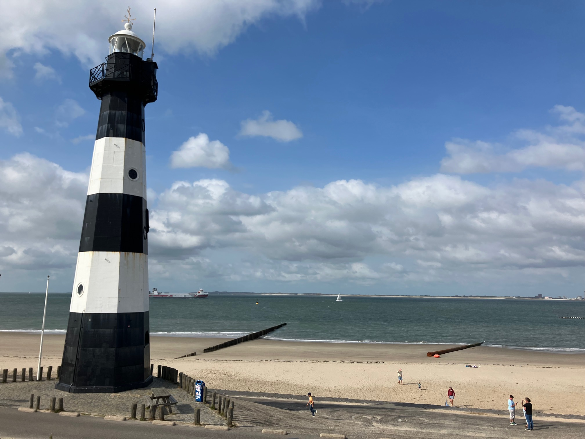

Daily Stats*
| Distance |
139.7 km |
| Time |
06:57:39 h |
| Avg. Speed |
20.1 km/h |
| Max. Speed |
35.0 km/h |
| Avg. Heart Rate |
128 bpm |
| Uphill |
359 m |
| Downhill |
340 m |
| Avg. Temperature** |
23.0 °C |
Elevation profile [m]
Slope profile [%]
*measured by Garmin Forerunner 945 & Sigma ROX 4.0
**measured at the lower back
Daybook
As promised in my last post, here are a few more impressions from Antwerp. Yesterday, I explored the historic center around the Grote Markt with the Stadhuis (a UNESCO World Heritage Site) on foot, and visited the Onze-Lieve-Vrouwekathedraal, Het Steen, as well as the eastern bank of the Scheldt. Of course, I couldn't see everything in three hours, but the heart of the city's history came to life, and I hope the first four impressions below can give you a sense of what it's like!
Leaving this behind, I set off in the morning for the longest planned leg of this year's tour, a binational ~140 km ride from Antwerp along the coast in the southern part of Zeeland (Netherlands) via Hoofdplaat, Breskens, Cadzand, Knokke-Heist and Blankenberge to Bruges. The weather was quite cloudy in the beginning, but also moderate and not very windy, so it was good for cycling, and my legs felt stable.
From Antwerp, the route went through the Fietserstunnel Linkeroever, an underwater tunnel from the east to the west side of the Scheldt. From there, I passed Zwijndrecht and rode a few kilometers along the "romantic" E34 (highway), until I reached the fortress town of Hulst after several small villages, industrial areas and fields. The interesting thing about Hulst is its good state of preservation, with the star-shaped center surrounded by a moat and city walls. It actually looks pretty cool on Google Maps, too ;-)
Just past Hulst, I started to observe small groups of people gathering at the roundabouts. At first, I was uncertain about what was happening, and when I saw some motorcycles driving across the road, I initially assumed it was a biker festival or something similar. However, when cars with bicycles on their roofs began to speed by, it became clear that a road cycling race was taking place, and my bike path ran right alongside it! To my surprise, I even recognized some of the logos on the team cars, such as Visma and Ineos, and at that point I thought, okay, maybe this is even a big race. So I waited at the side of the road for the cyclists to arrive, and shortly afterwards they passed me, accompanied by a kilometer-long parade of vehicles, including cameramen and security officers on motorcycles, emergency ambulances, a helicopter with camera equipment, and even more team cars. It was incredible how fast and close together the riders in the peloton were moving. At that speed, I couldn't recognize any familiar faces, but later I noticed on a cell phone video that guys like Tim Wellens, Tim Merlier (who later won the leg), and Mathieu van der Poel were only a few meters away :-) And this encounter was not to be the last ...
First, though, I got to Terneuze, where I had to stop at two bascule bridges, but was pointed to a detour by locals both times, so I didn't have to wait around for nothing. By this point, the headwind had picked up considerably, and even the straight, flat road felt like a steady 3-4% climb. I fought my way through Hoek and Biervliet, and then, behind Hoofdplaat, I was finally rewarded with a view over the dike to the mudflats and the sea beyond :-) Next to the Hooge Platen, a nature reserve, I cycled by the seaside until not far from Breskens, where I took a break for a few minutes on the dike (after ~80 km) to enjoy the view. While chatting with a lady, I learned that Breskens was the destination for the first leg of the Benelux Tour, and as I watched the tour convoy turn into Breskens on the horizon, I thought to myself what a coincidence it was that I was able to watch this race on my day of travel and right along my route! As I approached Breskens, I could just see the 1 km mark, many people were around, and, of course, the main road was closed. So I left Breskens via a detour, thinking that I had already experienced the highlight of my day ...
However, the route from Breskens to Knokke-Heist turned out to be the real highlight: surrounded by dunes, passing sandy beaches, nature reserves, campsites, and all in perfect weather (slightly sunny, moderate wind, temperatures just above 20°C), the ~30 km long part of the coastline was really quick to cover. Actually too fast, because I would have liked to spend 2-3 hours there on the beach. Maybe next time, then I'll plan a shorter distance along the coast! And I'll be even more careful when riding downhill on sandy ground—my second “slide” ended without any serious consequences, but my bike has definitely had enough of that ...
The ride through Knokke-Heist and Blankenberge thereafter went smoothly. Nevertheless, it was evident how much poorer the bike path is outside the beach area, where the highly polished beach asphalt changed to rough, uneven post-war ground. Another ~10 km and a quick jump into the supermarket later, I finally arrived at my accommodation in Bruges.
This concludes the ninth leg of my tour, and I would say that today was not only the most extensive route, but also the most scenic, with a beautiful seaside setting, amazing coastlines, and a random visit to the Benelux Tour as the cherry on top. I highly recommend it if you can handle a bit of headwind ;-)
Tomorrow I have another rest day and will explore Bruges a little. More on that in the next post!
Impressions
Stadhuis (Town hall) Antwerp — a UNESCO world heritage site — and Brabofontein
Old town of Antwerp at the Grote Markt (grand market)
Het Steen in Antwerp
Eastern bank of the Scheldt (river) with the Onze-Lieve-Vrouwekathedraal in the background
Fortress town of Hulst at the Binnenvest
Unexpected encounter with the peloton of the Benelux Tour
Selfie on the dike near Hoofdplaat
Bike path along the Hooge Platen (nature reserve)
Just outside Breskens

Lighthouse "Nieuwe Sluis" on the Westerschelde
Cadzand beach